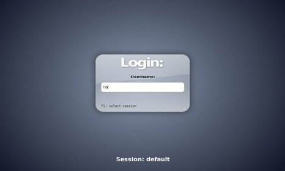
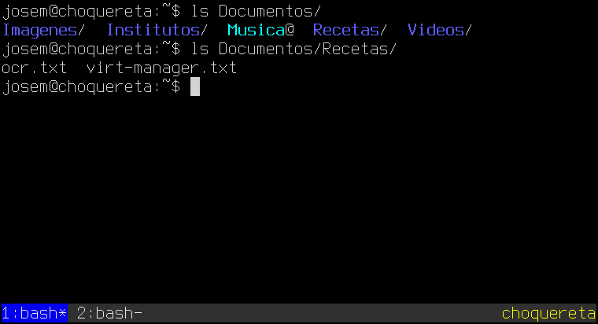

2.1. ¿Cómo es el entorno de texto?¶
Desde que se introdujo la interfaz gráfica en los ordenadores domésticos, la interfaz de texto resulta extraña para el común de los que se acercan a un ordenador. Como este será muy probablemente el caso del lector, el contenido bajo este epígrafe trata de explicar en qué consiste y cómo se usa un ordenador a través de este tipo de interfaces.
2.1.1. Ingreso inicial¶
Como paso previo al uso del sistema, éste nos obligará a identificarnos mediante un proceso que suele denominarse login. Este ingreso puede ser en un entorno de texto (típicamente en un servidor) o en un entorno gráfico (típicamente en un sistema de escritorio) y exigirá1 que nos identifiquemos a través de un nombre de usuario y una contraseña que debemos conocer previamente.
Un entorno de texto presentará el ingreso de este modo:

y un entorno gráfico, uno más o menos así:
El entorno de texto nos dará acceso directo al intérprete de comandos, que trataremos a continuación, mientras que para acceder a éste en el entorno gráfico necesitaremos buscar una emulador de terminal (xterm, lxterminal, gnome-terminal, etc.) en el menú correspondiente:
2.1.2. La interfaz de texto¶
Los sistemas UNIX (y entre ellos linux) son comúnmente administrados a través de una interfaz de texto2, aunque puedan disponer también de una interfaz gráfica. Estas interfaces de texto se caracterizan por ejecutar un intérprete de órdenes, que en el caso de linux es muy comúnmente bash3, después de que el usuario se ha validado en el sistema. La labor del intérprete de órdenes es esperar que el usuario introduzca una orden. Para ello presentará una línea más o menos así:
usuario@pc:~$ _
o sea, una línea que proporciona cierta información y que acaba con el símbolo del dólar y un espacio. A continuación aparece el cursor en espera de que el usuario ordene (de ahí, el término de línea de órdenes o línea de comandos) qué es lo que se debe hacer. Esa información inicial acabada en el símbolo del dólar se llama prompt y puede tener diverso aspecto, ya que es configurable. Por lo general, en la mayoría de los sistemas, muestra nuestro nombre de usuario (usuario en este caso), el símbolo de la arroba (@), el nombre de la máquina (pc), dos puntos (:) y el directorio de trabajo (~, que ya veremos qué significa). Por convención, cuando el usuario es el administrador (o sea, root) no se usa el símbolo dólar como remate del prompt, sino la almohadilla (#):
root@pc:~# _
Nota
Para simplificar, en estos apuntes haremos que el prompt sea una almohadilla cuando se actúa como administrador (root) y un dólar, en caso contrario.
Para usar tales interfaces de texto, se recurre a terminales, de las que hay de dos tipos:
Las terminales propiamente dichas, o consolas virtuales, que son las que existen con independencia del entorno gráfico; y, si se está en este, aparecen al pulsar Ctrl+Alt+F1. Luego se puede ir cambiando de una a otra pulsando Alt+FX, siendo X un número entre 1 y 64.
Las pseudoterminales, que son las que se usan a través de programas gráficos que emulan una terminal como xterm u otro tipo de programas que también presentan entornos de texto como ssh o tmux.
A efectos de nuestra guía, es irrelevante si estamos ante terminales o pseudoterminales. Un servidor es probable (y recomendable) que carezca de entorno gráfico así que usaremos en ellos o terminales o las pseudoterminales que proporciona el utilísimo tmux (también puede ser screen).
Ya se ha indicado que el ordenador espera una orden por nuestra parte. Pero ¿qué implica en este caso el hecho de dar una orden? Básicamente, indicar qué programa queremos usar. Si pensamos en una interfaz gráfica de ventanas, el ordenador también espera: espera que desplacemos el ratón hasta pulsar sobre el icono que representa el programa que deseamos ejecutar. En esencia, es lo mismo: en un caso se invoca el programa a través de su icono y, en otro caso, a través de su nombre. Por ejemplo:
# whoami
root
Hay un programa llamado whoami que nos dice quiénes somos. Si escribimos su nombre y al acabar pulsamos Enter, informamos a la máquina de que queremos usar tal programa y, consecuentemente, esta lo hace y nos devuelve la respuesta a través de la pantalla: root, en este caso, porque recuérdese que hemos acordado que un prompt constituido por una almohadilla simbolizará que actuamos como administrador.
Este programa (whoami) es enormemente simple y basta con dar únicamente su nombre para que se ejecute y nos devuelva una respuesta. Sin embargo, no siempre es así de sencillo. Otro algo más complicado es:
- echo
Muestra por pantalla los argumentos que se le pasan:
$ echo Estoy aprendiendo bash... Estoy aprendiendo bash...
Pero en principio5, nos hemos limitado a añadir unas cuantas palabras (argumentos en el argot) detrás del nombre de la orden. Por lo general, las cosas no son tan sencillas. Por ejemplo, si se añade el argumento
-e:$ echo -e "Hola\nAdios" Hola Adiós
La orden es capaz de interpretar algunos caracteres especiales como
\n(cambio de línea). Veamos esto con más detenimiento.
2.1.3. ¿Cómo dar una orden?¶
O dicho de otra modo, ¿cómo ejecutar un programa? Cuando se pretende usar un programa comúnmente se puede (o tiene que) decir algo más que el solo nombre. Igual pasa en la conversación cotidiana en que puede decirse «Muévete», pero también ser más preciso y decir «Muévete rápido». Incluso en ocasiones es indispensable añadir algo. Por ejemplo, si ordenamos con un «Cuélga», nuestro interlocutor nos preguntará «¿Qué es lo que quieres que cuelgue?». Porque efectivamente, no sabrá si quiere que colguemos la ropa o colguemos un cuadro en el salón.
Por ello, las órdenes que se dan tras el prompt suelen tener este aspecto:
$ <programa> [<argumentos>]
O sea, el nombre del programa seguido (o no) por una serie de parámetros o argumentos. Estos permiten alterar y completar la acción que realiza el programa.
En principio cómo deban escribirse estos argumentos depende de cada programa en particular, pero gran parte de ellos sigue el estándar POSIX. Tomemos para ilustrar este estándar el programa ls que nos informa de cuál es el contenido de un determinado directorio.
En principio, la forma más sencilla de usar ls es sin ningún argumento:
$ ls
En este caso, al no indicar cuál es el directorio del que se quiere obtener el contenido, ls sobreentiende el directorio actual de trabajo. Si quisiéramos indicar otro bastaría con incluirlo como argumento:
$ ls /
Esto muestra el contenido del directorio /. Ahora bien, los comandos admiten también argumentos que comienzan por el carácter -, que llamaremos opciones. Por ejemplo:
$ ls -a /
La opción -a altera el comportamiento de ls, de modo que se mostrarán todos los ficheros, incluidos los ocultos, que antes no se mostraban6. Esta opción es lo que se llama una opción corta porque consta de una sola letra. En estos casos, a la letra sólo hay que anteponerle un único guión. Por supuesto, es posible añadir varias opciones a la vez:
$ ls -a -l /
Ahora hemos incluido la opción -l. Una particularidad es que podemos alterar el orden de los argumentos y la orden seguirá siendo válida:
$ ls -l -a /
o bien:
$ ls / -a -l
Además en el caso de las opciones cortas, es posible fusionarlas:
$ ls -al /
También existen las opciones largas, que no son una letra, sino una palabra. Por ejemplo, -a tiene su equivalente largo en --all:
$ ls --all
Las opciones largas se notan anteponiendo dos guiones y no pueden fusionarse de ningún modo. Algunas opciones (sean cortas o largas) exigen a su vez un argumento que complete su significado. Por ejemplo, la opción -w de ls nos permite indicar el ancho que queremos que ocupe la respuesta del comando. Pero, claro, hay que añadir cuál exactamente. Si quisiéramos un ancho de 80 caracteres:
$ ls -w 80 /
En este caso, el 80 siempre tiene que posponerse a la opción -w con lo que no podremos fusionar con otra opción corta por la derecha, pero sí por la izquierda. Esto sigue siendo válido:
$ ls -lw 80 /
Lo que si puede hacerse es fusionar la opción con su argumento:
$ ls -lw80 /
Para las opciones largas el argumento debe ir separado por un espacio o un signo igual:
$ ls -l --width 80
o bien:
$ ls -l --width=80
Advertencia
Las reglas expuestas bajo este epígrafe son las que prescribe el estándar POSIX y muchos programas las siguen. Sin embargo, no todos los comandos permiten pasar los argumentos de este modo. Una excepción entre los comandos básicos es, por ejemplo, find.
Por último, es pertinente reseñar que, dado cada programa tiene sus propias
opciones y argumentos, suelen ir acompañados de una ayuda para su uso. La
mayoría tiene una opción -h o --help y también una página de manual a la
que se accede a través del comando man:
$ man ls
Al respecto de este comando es útil conocer que la opción -k permite buscar
las páginas del manual relacionadas con lo que se indique a continuación:
$ man -k printf
asprintf (3) - imprimen en una cadena reservada
dprintf (3) - imprimen en un descriptor de fichero
fprintf (3) - conversión de salida formateada
fwprintf (3) - conversión con formato de la salida de caracteres anchos
printf (3) - conversión de salida formateada
snprintf (3) - conversión de salida formateada
sprintf (3) - conversión de salida formateada
swprintf (3) - conversión con formato de la salida de caracteres anchos
vasprintf (3) - imprimen en una cadena reservada
vdprintf (3) - imprimen en un descriptor de fichero
vfprintf (3) - conversión de salida formateada
vfwprintf (3) - conversión con formato de la salida de caracteres anchos
vprintf (3) - conversión de salida formateada
vsnprintf (3) - conversión de salida formateada
vsprintf (3) - conversión de salida formateada
vswprintf (3) - conversión con formato de la salida de caracteres anchos
vwprintf (3) - conversión con formato de la salida de caracteres anchos
wprintf (3) - conversión con formato de la salida de caracteres anchos
printf (1) - format and print data
y que estas ayudas se distribuyen en distintas páginas que están numeradas. Por lo general, es innecesario indicar a man la página del manual en la que se encuentra la explicación deseada (en el ejemplo, para ls no se indicó), pero en ocasiones es indispensable porque hay dos entradas distintas con un mismo nombre. Si observamos la última salida veremos que hay dos entradas para printf una en la página 1 que se corresponde con el programa homónimo y otra en la página 3 que se corresponde con la función de C. En este caso, para especificar una u otra puede hacerse del siguiente modo:
$ man 1 printf
2.1.4. Comandos internos y externos¶
Cuando ejecutamos un comando, este puede ser interno o externo. Los internos son comandos que proporciona la propia shell y que, por tanto, no se corresponde con ningún programa instalado en el disco duro. Los externos, en cambio, son programas independientes de la shell y, consecuentemente, están ubicados en algún lugar del árbol de directorios7.
Comandos internos son, por ejemplo, cd, echo o pwd y están enumerados y explicados en una página del manual:
$ man builtins
- help
Además de tal página del manual, se puede acceder a su ayuda a través del comando interno help. Por ejemplo:
$ help cd
Los externos (como ls o cp) tienen su propia página y, además, han de encontrarse en algún lugar del disco duro, por lo que el comando which que sirve para indicarnos dónde se encuentran los ejecutables, devolverá su ruta:
$ which cp
/bin/cp
Nota
Para búsquedas más exhaustivas de programas y ficheros que no son programas puede recurrirse a whereis o find.
La pregunta del millón es, ¿cómo sé si una orden es externa o interna? Una posible solución es usar which: si la orden es externa, entonces la orden nos devolverá la ruta (como ha ocurrido con cp) y si es interna, no devolverá nada, porque no existe ningún programa ejecutable:
$ which cd
Pero esta solución no siempre funcionará. Eso es debido a que hay órdenes que tienen una versión interna y también una versión externa. Por ejemplo, test. Haciendo esto:
$ which test
/usr/bin/test
podríamos pensar que al usar test estamos usando una orden externa, pero la shell también incorpora su propia versión interna de test, así que cuando ejecutemos test sin más dentro de una sesión de bash lo que haremos en realidad es utilizar la orden interna. Lo mejor siempre es fiarnos mejor de la orden interna:
- type
Devuelve información sobre el tipo de orden que se adjunta como argumento:
$ type test test es una orden interna del shell $ type sudo sudo is /usr/bin/sudo
En el caso de que nuestra shell sea bash, la orden tiene la útil opción -a que nos devuelve todas las posibilidades:
$ type -a test test es una orden interna del shell test is /usr/bin/test test is /bin/test
Como ves, test es ambas cosas: una orden interna y una orden externa y como siempre tienen preferencia las órdenes internas se ejecuta la orden interna.
Nota
¿Hay forma de obligar a bash a ejecutar la orden externa en vez de la interna? Pues sí, sí que la hay, pero ya va siendo mucho para el primer tema.
2.1.5. ¿Cómo salgo de aquí?¶
Para abandonar la shell tenemos tres posibilidades:
- Ctrl+D
Escribir
Ctrl+Den una línea de órdenes vacía. Esto equivale a usar el comando exit.
- exit
Permite cerrar la sesión abierta con bash. Para saber más sobre esta orden, consulte en la parte de programación.
- logout
Permite cerrar la sesión de login8 abierta con bash.
Si lo que se pretende es apagar el sistema, existen varias alternativas:
- poweroff
Cierra inmediatamente el sistema y apaga la máquina:
# poweroff
- halt
Cierra inmediatamente el sistema, pero no apaga la máquina9:
# halt
- reboot
Cierra inmediatamente el sistema y reinicia la máquina:
# reboot
- shutdown
Permite, tras un periodo de tiempo expresado en minutos, cerrar el sistema y apagar la máquina (con
-P) o no (con-H), o reiniarla (con-r). Por ejemplo, la orden:# shutdown -P +10Apagará la máquina a los diez minutos de haberse ejecutado. Si no se especifica qué se quiere hacer, se sobrentienda
-P. Es posible escribir :kbd:nowen vez del tiempo, para indicar que se quiere que el proceso se inicie inmediatamente.
Notas al pie
- 1
Puede darse la circunstancia de que nos encontremos con sistemas (tanto de texto como gráficos) que se hayan preparado para evitar este ingreso inicial. No es una práctica recomendable, puesto que da acceso directo al sistema a cualquier que tenga acceso físico al ordenador, pero en el caso de un servidor o un sistema de escritorio alojado en un portátil es absolutamente temerario.
- 2
Habitualmente a la interfaz de texto que nos proporciona el intérprete de comandos se la suele denominar como la shell. De hecho, los nombres de intérpretes de comandos suelen acabar con -sh, precisamente por este motivo (bash, ksh, zsh, etc.)
- 3
En realidad, en las distribuciones basadas en debian, el intérprete de comandos que usan los script del sistema es dash, no bash, que es sólo el predeterminado para las sesiones interactivas que abren los usuarios. Esto es así, pòrque dash es mucho más simple y ligero que bash (y menos potente también). Debido a esto,
/bin/shes un enlace simbólico a dash; por lo que al escribir nuestros propios scripts debemos tener cuidado a la hora de escribir la línea de sheebang, porque si invocamos a sh y hacemos uso de características que posee bash, pero no dash, el script no funcionará.- 4
En realidad, el número de terminales se puede manipular. Tradicionalmente había seis terminales (desde Alt+F1 a Al+F6) y en la que debía ser la séptima aparecía el entorno gráfico, si es que estaba lanzado. En los sistemas modernos, sólo se lanza la primera terminal y las demás aparecen sólo si se intenta acceder a ellas. El entorno gráfico aparece en la primera que esté libre, así que en un sistema en el que se lance el entorno gráfico en el arranque (prácticamente la totalidad de los linux de escritorio), éste ocupará la segunda posición. Aún así, pueden aparecer terminales de texto en las posiciones 3, 4, 5 y 6. Si quiere acceder a las terminales tenga en cuenta que si se encuentra en el entorno gráfico no basta con pulsar Alt; si quiere acceder a la tercera terminal de texto tendrá que pulsar también Ctrl (Ctrl+Alt+F3). Una vez en las terminales de texto, sí podrá pulsar Alt. Para volver al entorno gráfico sólo tiene que intentar acceder a la terminal que usurpa el entorno gráfico.
- 5
En realidad, echo permite añadir opciones de las que se describen bajo el siguiente epígrafe (por ejemplo,
-e).- 6
Desgraciadamente, en
/no suele haber ficheros ocultos, así que obtendremos los mismos ficheros.- 7
Véase la variable PATH para saber más al respecto.
- 8
Aún nos viene grande hacer distinciones entre lo que es una sesión de login y la que no. Cuando se vea el comando su se verá una forma de crear sesiones que no son de login de las que, por tanto, se podrá salir con exit, pero no con logout. Tampoco son sesiones de login las sesiones de bash creadas por un script o las creadas por una subshell:
$ (logout) -bash: logout: no es un shell de entrada: use `exit'`
- 9
Hasta su versión 7, cuando debian usaba System V como sistema de inicio y no systemd, halt también apagaba la máquina.